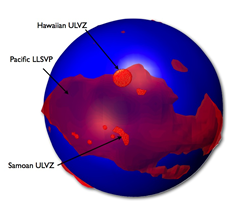
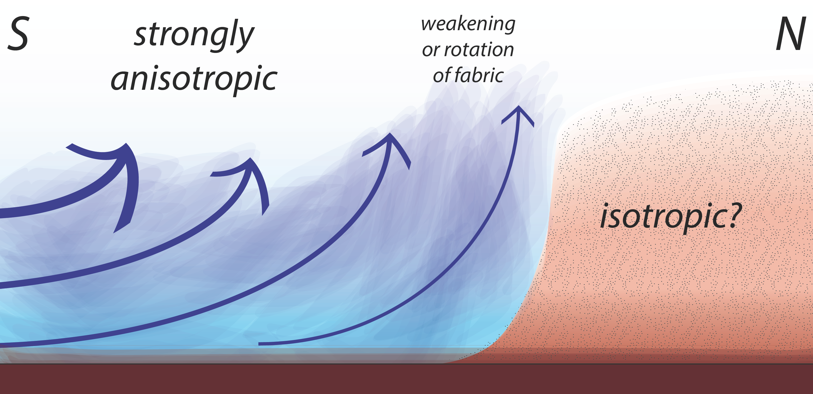

Research
Slab signatures on mantle discontinuities beneath the Mediterranean
-- with Arwen Deuss
The mantle is delineated by seismic discontinuities between 300 and 800 km depth. Variations in topography, width and occurrence of the discontinuities indicate lateral variations in temperature, composition and water content, as these variations influence the mantle phase transitions. Seismic studies of the conversions of pressure to shear waves (Pds phases) are an important tool to observe lateral variations in these discontinuities.
We've collected a Pds data set across all European seismic stations since 2000 that are available through ORFEUS or IRIS; resulting in ~500,000 event-station pairs. We deconvolve the radial component by the vertical component – assumed to represent the source component- using the iterative deconvolution method to obtain receiver functions. Next we assess the quality of a receiver function by the signal-to-noise ratio and by evaluating how well the radial component is reproduced when reconvolving the receiver function with the vertical component. This results in ~40,000 high quality receiver functions across Europe.
Our receiver functions show little lateral variation in the depth of the transition zone discontinuities across the East European Craton, and we use this region as a reference to the more tectonically unstable regions. Around the Mediterranean, we look for signature of slabs ponding or penetrating at the discontinuity around 660 km; we aim to link the characteristics of the mantle discontinuities to the ongoing dynamics.
 Composition of the lower mantle
Composition of the lower mantle
-- with Ian Rose, Cayman Unterborn, Timo Heister, Bob Myhill, et al.
This multi-disciplinary project was initiated at the 2012 CIDER summer workshop (www.deep-earth.org.).
We are working towards constraining the composition of the lower mantle with seismic velocities. So far, we have provided an open-source and benchmarked python toolbox, named BurnMan, to compute seismic velocities from a mineralogical composition at high pressures and temperatures. The toolbox is available at www.burnman.org. We are looking forward to contributions and feedback.
Seismic constraints on structures above the core-mantle boundary
-- with Barbara Romanowicz
From global seismic tomography we know large slow seismic structures exist on the core-mantle boundary. These are dubbed Large Low Shear Velocity Provinces (LLSVPs). LLSVPs are thousands of kilometers across and extend hundreds of kilometers above the boundary. Inherent to the method, global tomography results in smooth velocity variations. Body wave imaging on a smaller-scale needs to be done to study the sharpness of the boundaries of these structures. The largest LLSVPs are centerated beneath the Pacific and beneath Africa. We mapped a smaller slow velocity province beneath the Ural mountains in Russia ('the Perm anomaly') (Lekic et al. 2012).
Body waves at higher frequencies than generally used in global tomography, also see thin layers of ultra-low velocities within these LLSVPs. These are named Ultra Low Velocity Zones (ULVZs). We mapped the 3D extent of such a zone beneath the Hawaiian Island Chain at the edge of the Pacific LLSVP (Cottaar et al. 2012). This zone has roughly the area size of the state of Texas and is about 20-25 km thick. The velocities within are about 20% slower than surrounding velocities. The nature and the origin of both the LLSVPs and the ULVZs and their relationships to hotspots remains a question.
Seismic anisotropy caused by flow in the lowermost mantle
-- with Mingming Li, Allen McNamara, Rudy Wenk and Barbara Romanowicz

When a material is seismically anisotropy, its seismic wave speed varies with direction and propagation of the wave. In the lowermost mantle we see seismic anisotropy. In general, the seismic anisotropy appears stronger outside the LLSVPs. We mapped a location of particular strong anisotropy outside the African LLSVP, which decreases in strength towards and disappears within the LLSVP (Cottaar et al. 2013).
The cause of seismic anisotropy could be flow of material. The flow can be accommodated by deformation in the minerals, which gives the material an overall preferred orientation or texturing. We forward model the resulting seismic anisotropy from a geodynamical model under different assumptions of mineral phases and dominant slip systems. The different models result in different anisotropic signatures (Wenk et al. 2011). When the mineral phases and their slip systems are constrained, we can interpret seismic anisotropy in terms of flow.
Dynamics of the inner core
-- with Bruce Buffett
Over the past two decades arguments have been made for and against the occurrence of thermal convection in the inner core. Here we use numerical simulations of thermochemical convection to develop parameterized models for the thermal and chemical evolution of the inner core. If convection occurs depends strongly on the thermal conductivity of the inner core. Higher thermal conductivities, as recently calculated, would make a convective episode less likely. Termination of convection at an early stage of evolution may provide an explanation for a distinct anisotropy in the innermost region of the inner core or a shallow isotropic layer.